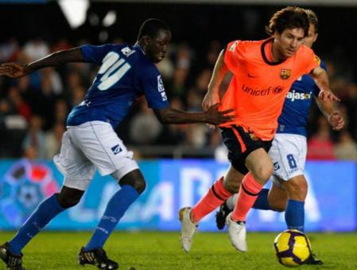

Xerez, the team that twice held out against LaLiga's Messi

Photo: Mundo DeportivoXerez CD are one of only two teams in LaLiga history to avoid conceding a goal to Lionel Messi, and they did it over two matches, home and away, in the thick of the 2009/10 title race.
In a career packed with records, there is one that Lionel Messi never quite completed: scoring against every opponent he faced in the Primera División. Of the more than forty different teams he came up against in LaLiga wearing the Barcelona shirt, very few managed something that neither the best goalkeepers nor the best defences in Europe achieved for almost two decades: keeping a clean sheet against the greatest player in history. Xerez CD are one of those cases, with a detail that makes it even more remarkable: they faced Messi's Barça twice, home and away, in the middle of the title race, and in neither match did the Argentine manage to score against them.
Two matches, a league title at stake
Xerez CD made their Primera División debut in the 2009/10 season, the only one in their history in the top flight, precisely the campaign in which Pep Guardiola's Barcelona and Manuel Pellegrini's Real Madrid fought out one of the tightest league races of the decade, settled practically on the final matchday. In that context of maximum pressure, with every three points weighing heavily in the title fight, the blue-and-whites crossed paths twice with Messi's team.
The first meeting was played on 2 December 2009 at the Estadio Municipal de Chapín, where Barça won 0-2 with goals from Thierry Henry, in the 46th minute, and Zlatan Ibrahimovic, in stoppage time. The return fixture came on 24 April 2010 at the Camp Nou, in the final stretch of the season with the league still undecided, and ended in a 3-1 win for the Catalans: Jeffrén Suárez, Henry and Ibrahimovic scored for the hosts, while Mario Bermejo got the consolation goal for Xerez. In that match, Xerez's Fabián Orellana was also sent off.
In neither of the two games, despite playing the full ninety minutes and despite Barcelona needing to win to stay in the title race, did Messi manage to score against Xerez. No small feat, considering that same season the Argentine would finish as LaLiga's top scorer with 34 goals and Barça would go on to be crowned champions.
The other case: Real Murcia
Only one more case can be added to this statistical rarity in the whole history of LaLiga: that of Real Murcia, who also held out without conceding to Messi, although in very different circumstances from Xerez. The Murcia side only coincided with the Argentine in the Primera División in the 2007/08 season, and in just one match, on the final matchday, played on 17 May 2008 at the Nueva Condomina, where Barça won 3-5 with a Henry hat-trick, but once again without a goal from Messi.
🇪🇸 Leer en español ← Back to home